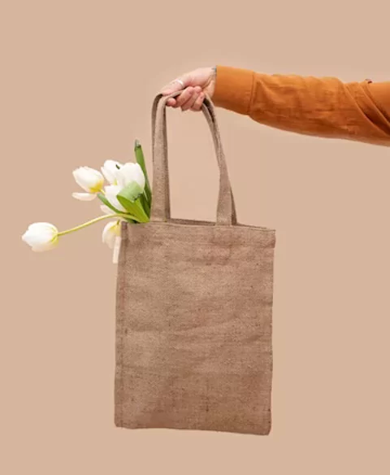

About Us
Welcome to Kreta.com, your premier destination for high-quality, eco-friendly jute products. At Kreta, we are passionate about sustainability and committed to offering products that not only enhance your lifestyle but also contribute positively to our planet.
Our Story

Founded in 2024, Kreta.com emerged from a simple idea: to create beautiful, functional, and sustainable products using one of nature’s most versatile fibers – jute. Our journey began with a small team of eco-conscious enthusiasts who saw the potential in jute to revolutionize the way we think about everyday items. Today, we are proud to be at the forefront of the green movement, providing a diverse range of products that are both stylish and environmentally responsible.
Our Mission
Our mission is to promote sustainable living through the use of jute products. We aim to reduce the environmental impact of conventional materials by offering an eco-friendly alternative that is both durable and aesthetically pleasing. By choosing Kreta, you are not just purchasing a product; you are making a conscious decision to support sustainability and protect our planet for future generations.
Our Products
Kreta.com offers an extensive range of jute products that cater to various needs and preferences. From chic tote bags and functional storage baskets to elegant home décor and versatile rugs, our products are designed to blend seamlessly with any lifestyle. Each item is crafted with meticulous attention to detail, ensuring high quality and durability. We source our jute responsibly, ensuring that every step of our production process is as eco-friendly as possible.
Why Jute?
Jute is a natural, biodegradable fiber that is both strong and versatile. It grows quickly, requiring minimal water and no harmful pesticides, making it one of the most sustainable materials available. By integrating jute into our product line, we are able to offer items that are not only beautiful and functional but also gentle on the environment.
Our Commitment
At Kreta, we are dedicated to maintaining the highest standards of sustainability and ethical practices. We work closely with our suppliers to ensure fair labor practices and strive to minimize our carbon footprint through eco-friendly production methods. Our packaging is recyclable, and we are continually seeking new ways to improve our sustainability efforts.
Join Us

We invite you to join us on our journey towards a greener future. Explore our collection of jute products and discover how stylish sustainability can be. Together, we can make a difference, one jute product at a great price.
Thank you for choosing Kreta.com – where quality meets sustainability.